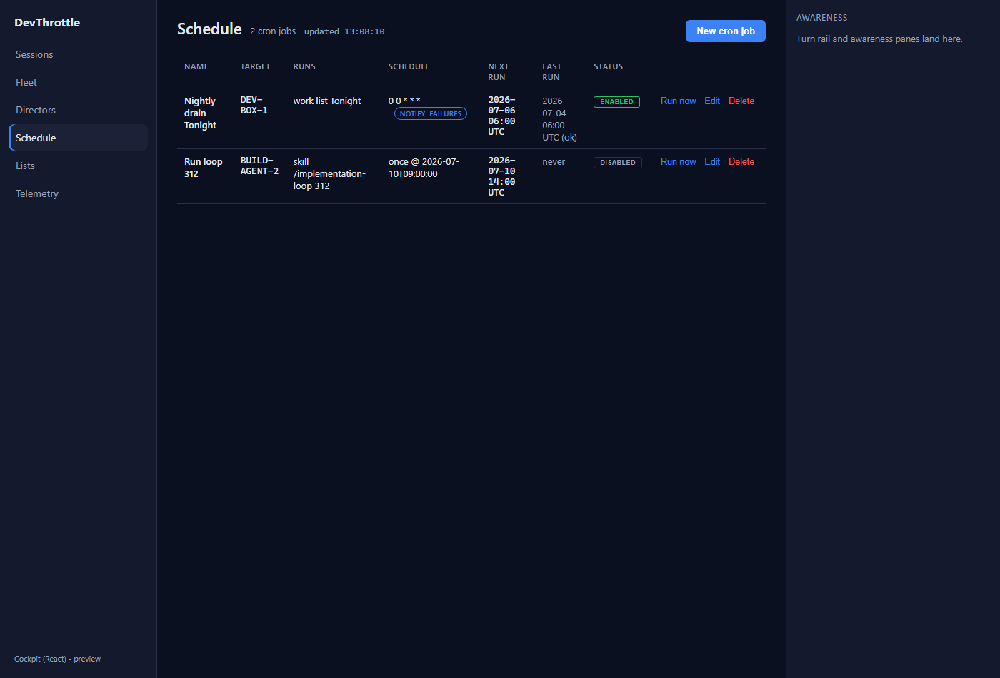
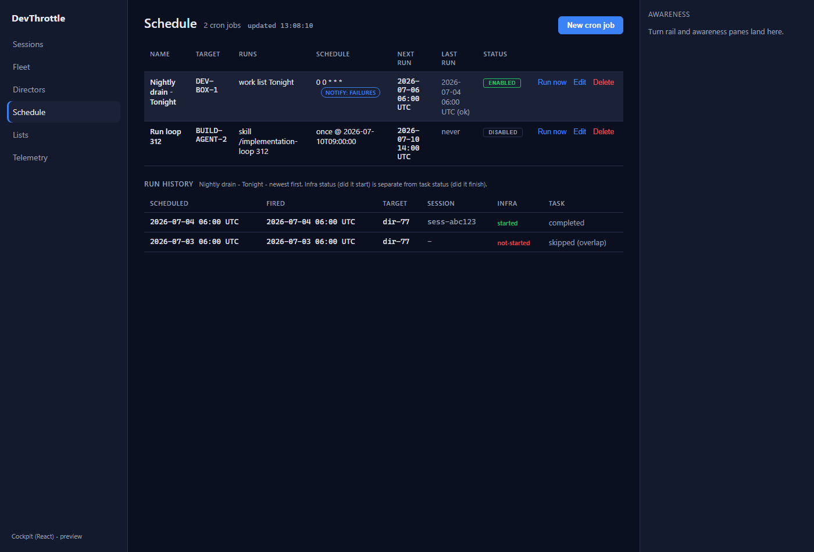
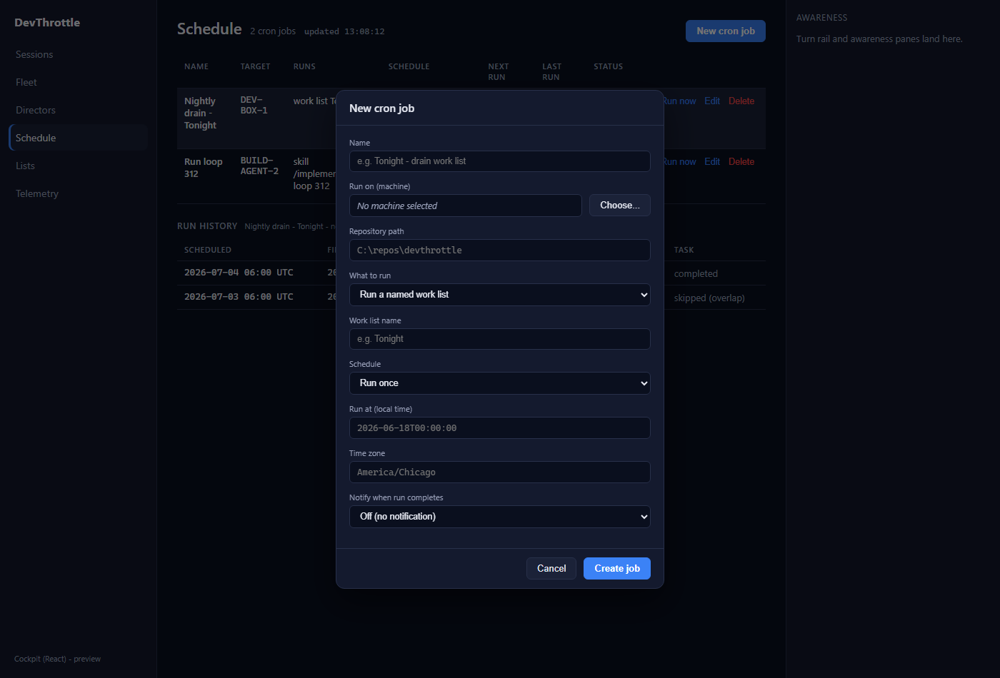
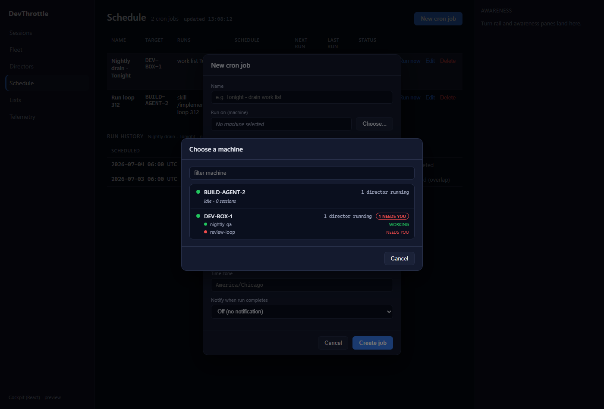
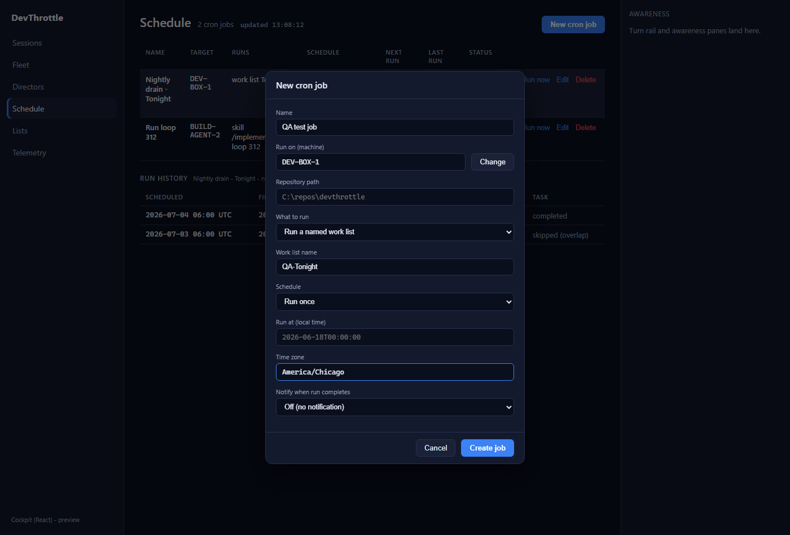
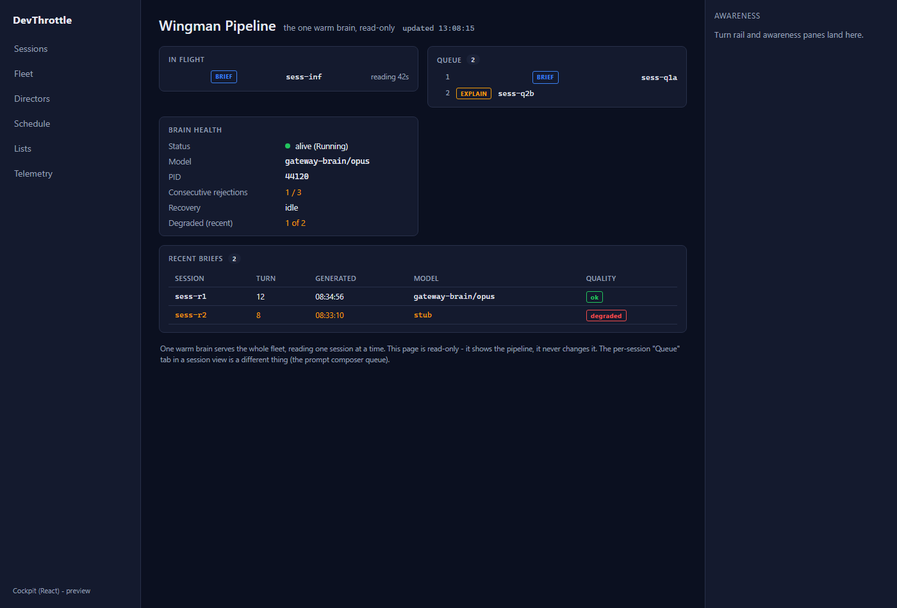

Title: Cockpit React: port Schedule + the Wingman queue (epic #967). PR: #1008.
Branch: issue-976-schedule-wingman. QA date: 2026-07-05.
Independently verified in an isolated git worktree. Every gate was re-run from a clean checkout of the PR branch; the running React pages were driven from the QA session's own Vite build with Playwright, all Gateway requests answered by an isolated in-test backend - no real Gateway, Director, or schedule was touched.
| Gate | Command | Result |
|---|---|---|
| Cockpit build | npm run build --workspace @devthrottle/cockpit | PASS - tsc --noEmit clean, vite build 74 modules |
| Lint (Gateway-only-ingress) | npm run lint | PASS - no absolute-URL literals, 0 findings |
| Gateway release + cockpit bundle | dotnet build ...Gateway.csproj -p:RunCockpitBuild=true -c Release | PASS - 0 Warning(s), 0 Error(s); bundle staged into wwwroot/c |
| Full solution | dotnet build cc-director.sln | PASS - 0 Warning(s), 0 Error(s) |
CONFIRMED on clean origin/main (26ac2e12), pre-existing, NOT introduced by #976.
| Check on clean origin/main | Result |
|---|---|
Workspace strict typecheck npm run typecheck (tsc --noEmit incl. test files) |
FAILS - 7 errors in packages/client-core/src/awareness/awarenessClient.test.ts (TS2493 x5 on empty-tuple mock.calls[0] indexing, TS2352 x2 on RequestInit cast). Added by the already-merged #974. |
Vitest npm run test (client-core) | PASSES - 5 files, 70 tests, including awarenessClient.test.ts's 7 tests. The failure is strict tsc only; runtime tests are green. |
Delta introduced by PR #1008: ZERO new typecheck or test failures. On the PR branch the workspace typecheck
shows the identical 7 pre-existing awarenessClient.test.ts errors and nothing else; the cockpit and
mobile workspaces typecheck clean, and vitest is still 70/70. #976 is judged on its own delta only; the
awarenessClient.test.ts breakage is a #974 follow-up for the supervisor, not a #976 defect.
| # | Criterion | Expected | Actual | Verdict |
|---|---|---|---|---|
| 1 | Schedule and the Wingman queue render the same information and support the same actions as the Blazor pages. | One-to-one parity with Schedule.razor and WingmanQueue.razor. |
Line-by-line port confirmed. Schedule: job table (Name/Target/Runs/Schedule+notify badge/Next/Last/Status chip/Run now-Edit-Delete), run-history split (infra vs task status, colored), create/edit modal (all fields + conditional worklist/seed, cron/runAt, notify+webhook), machine picker dialog with reachable count, NEEDS YOU, and 3-session live preview. Wingman: In flight, Queue (ordered, BRIEF/EXPLAIN), Brain health (all 6 rows), Recent briefs (5 cols, degraded highlight), read-only note. All display helpers ported faithfully. Live-rendered - see shots below. | PASS |
| 2 | The Blazor paths can be flipped to React with no loss of function. | Every read and action works over the Gateway. | Reads render (5s / 3s polls). Writes captured live: POST /cron/jobs/job-alpha/run (Run now) and POST /cron/jobs with a well-formed CronJobDto body (name, target machine chosen via picker, workListName, timeZoneId, preventOverlap, notifyOn) - matching the Blazor BuildFromForm. Endpoints and {jobs}/{runs} envelopes confirmed against CronJobEndpoints.cs / CronRunEndpoints.cs / GatewayHost /wingman/queue - unchanged server contract. |
PASS |
| 3 | No absolute URLs in the client (lint rule passes). | npm run lint clean. |
Clean. Every fetch in scheduleClient.ts / queueClient.ts is root-relative (/cron/jobs, /wingman/queue). |
PASS |





